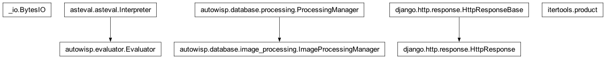

autowisp.browser_interface.results.lightcurve_views module
Class Inheritance Diagram

Views for displaying the lightcurve of a star.
- autowisp.browser_interface.results.lightcurve_views._add_lightcurve_to_session(plotting_info, lightcurve_fname, select=True)[source]
Add to the browser session a new entry for the given lightcurve.
- autowisp.browser_interface.results.lightcurve_views._convert_plot_data_json(plot_data, inverse)[source]
Re-format plot data for storing in JSON format or reverse conversion.
- autowisp.browser_interface.results.lightcurve_views._create_subplots(plotting_info, splits, children, parent, figure)[source]
Recursively walks the plot layout tree creating subplots as needed.
- autowisp.browser_interface.results.lightcurve_views._get_subplot_boundaries(splits, children, x_offset, y_offset, result)[source]
Return coords of horizontal and vertical boundaries between plots.
- autowisp.browser_interface.results.lightcurve_views._init_session(request)[source]
Initialize the session for displaying lightcurve with defaults.
- autowisp.browser_interface.results.lightcurve_views._jsonify_plot_data(plot_data)[source]
Re-format plot data for single sphotref for storing in JSON format.
- autowisp.browser_interface.results.lightcurve_views._parse_optimizables(optimizables)[source]
Convert user shorthands to lists of allowed values for
find_best.
- autowisp.browser_interface.results.lightcurve_views._sanitize_rcparams()[source]
Return list of matplotlib rcParams that can be set through BUI.
- autowisp.browser_interface.results.lightcurve_views._subdivide_figure(plot_config, new_splits, current_splits, children)[source]
Sub-divide all plots with entries in new_splits accordingly.
- autowisp.browser_interface.results.lightcurve_views._unjsonify_plot_data(json_data)[source]
Undo _jsonify_plot_data().
- autowisp.browser_interface.results.lightcurve_views._update_plotting_info(plotting_session, updates)[source]
Modify the currently set-up figure per user input from BUI.
- autowisp.browser_interface.results.lightcurve_views.clear_lightcurve_buffer(request)[source]
Remove buffered lightcurve data from the session.
- autowisp.browser_interface.results.lightcurve_views.display_lightcurve(request)[source]
Display plots of a single lightcurve to the user.
- autowisp.browser_interface.results.lightcurve_views.display_lightcurve_for_star(request, gaia_id)[source]
Navigate to lightcurve display pre-loaded for the given Gaia ID.
- autowisp.browser_interface.results.lightcurve_views.download_lightcurve_figure(request)[source]
Generate and return a PDF file of the currently setup lightcurve.
- autowisp.browser_interface.results.lightcurve_views.edit_model(request, model_type, data_select_index)[source]
Add controls to edit the model parameters.
- autowisp.browser_interface.results.lightcurve_views.edit_rcparams(request)[source]
Set the view to allow editing rcParams.
- autowisp.browser_interface.results.lightcurve_views.edit_subplot(request, plot_id)[source]
Set the view to allow editing the selected plot.
- autowisp.browser_interface.results.lightcurve_views.plot(target_info, plot_config, plot_decorations)[source]
Make a single plot of the spceified lighturve.